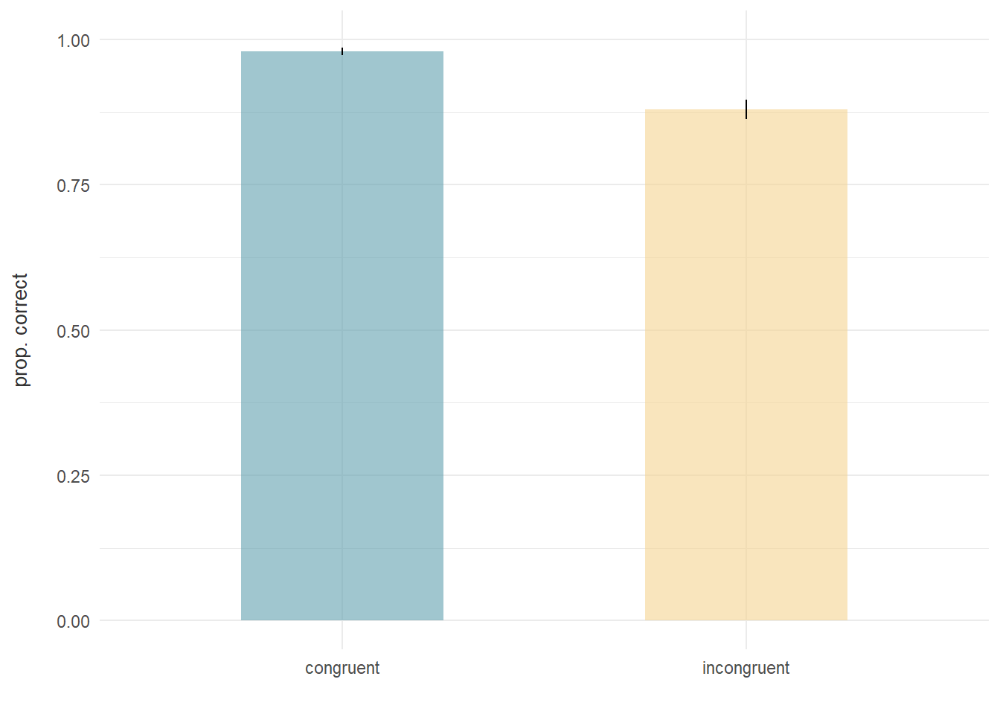
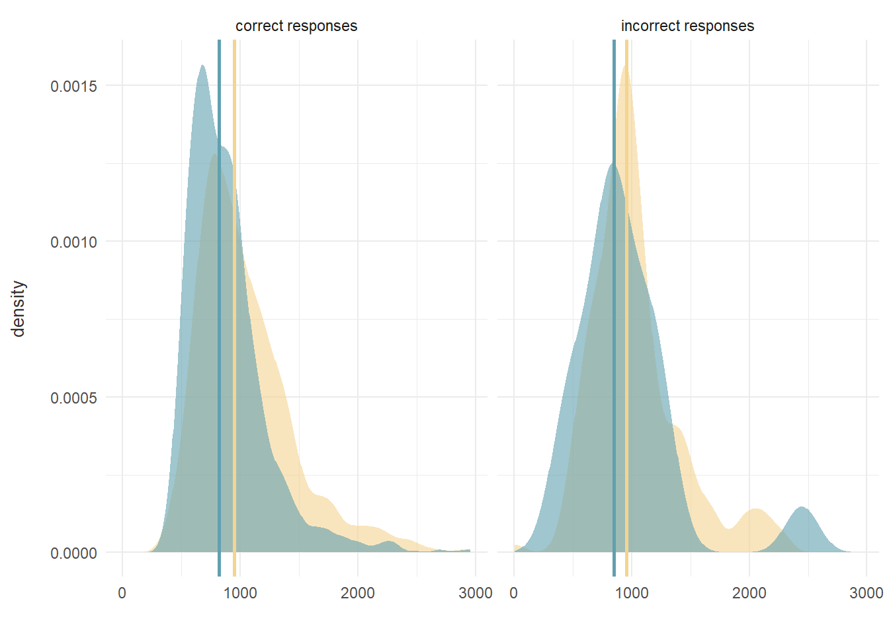
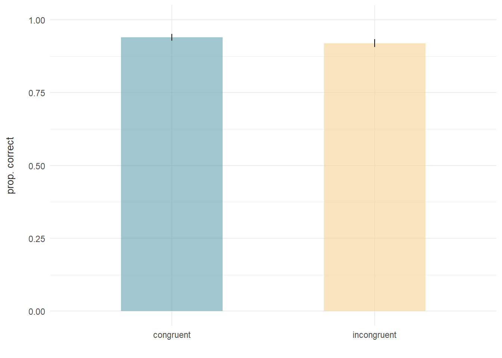
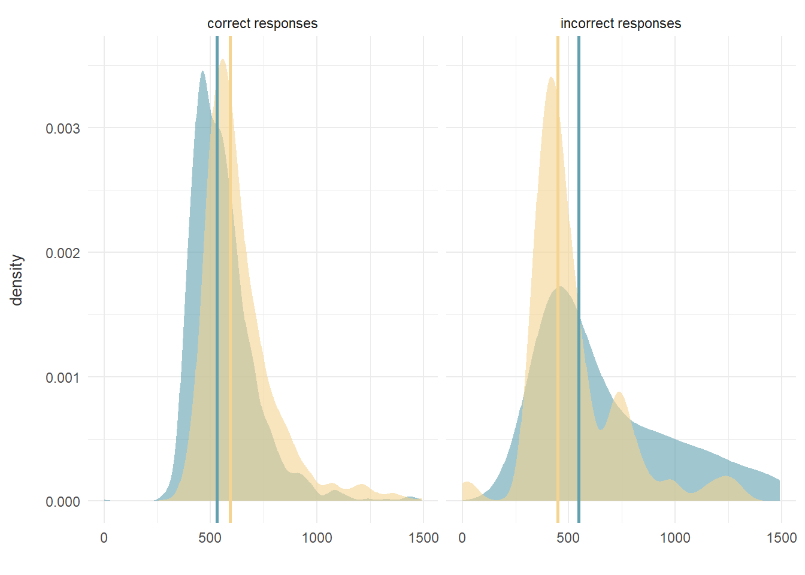
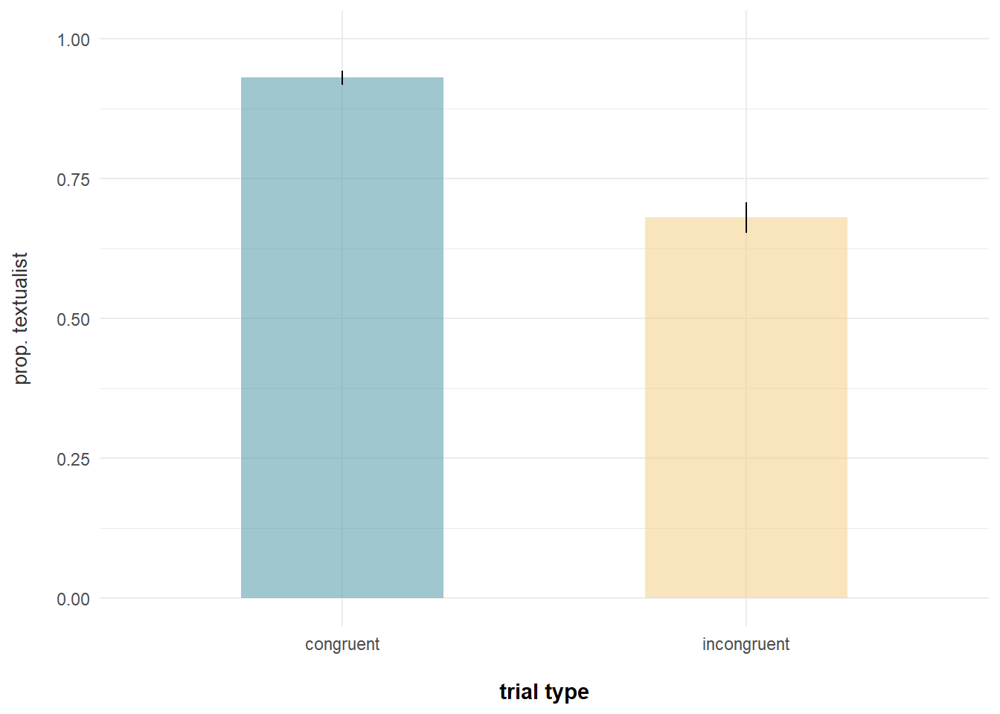
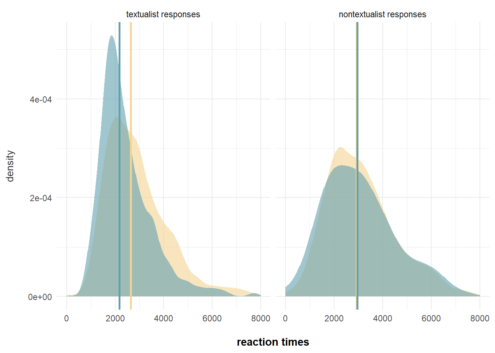

library(here)
library(tidyverse)stroop_flanker_analysis_behavioral
packages and data
data_path <- here("stroop_flanker_raw.csv")
data <- read.csv(data_path)plots per task
stroop data
stroop <- data |>
filter(task=="stroop_response") |>
select(subj_code,color,text,response,correct_response,correct,rt,trial_index) |>
mutate(congruent = ifelse(color==text,1,0))correct responses for congruent vs. incongruent trials
#calculate prop.s per condition
p_stroop_prop <- stroop |>
mutate(correct=factor(ifelse(correct=="true",1,0))) |>
group_by(congruent,correct) |>
summarize(n = n()) |>
mutate(prop=round(n/sum(n),2),
se = sqrt((prop*(1-prop))/n),
CI_lower = prop-1.96*se,
CI_upper = prop+1.96*se) |>
filter(correct==1) |>
mutate(congruent=ifelse(congruent==1,"congruent","incongruent")) |>
ggplot(aes(x=congruent,y=prop))+
geom_bar(stat = "identity",aes(fill=congruent),width=0.5,alpha=0.6)+
geom_linerange(aes(ymin=CI_lower,ymax=CI_upper))+
theme_minimal()+
labs(x=" ",y="prop. correct\n")+
scale_fill_manual(values=c("#61A0AF","#F5D491"))+
theme(legend.position = "none")+
scale_y_continuous(limits=c(0,1))+
theme(axis.title.y = element_text(size=10,color="grey20"))
p_stroop_prop
response times for congruent vs. incongruent trials
#medians
stroop_rt_medians <- stroop |>
filter(rt!="null") |> #filter out timed-out trials
mutate(correct=factor(ifelse(correct=="true","correct responses","incorrect responses")),
rt=as.numeric(rt)) |>
group_by(congruent,correct) |>
summarize(m = median(rt))
stroop_rt_medians# A tibble: 4 × 3
# Groups: congruent [2]
congruent correct m
<dbl> <fct> <dbl>
1 0 correct responses 950
2 0 incorrect responses 959
3 1 correct responses 819
4 1 incorrect responses 849#plot
p_stroop_rt <- stroop |>
filter(rt!="null") |> #filter out timed-out trials
mutate(correct=factor(ifelse(correct=="true","correct responses","incorrect responses")),
rt=as.numeric(rt)) |>
ggplot(aes(x=rt,fill=factor(congruent)))+
geom_density(alpha=0.6,color=NA)+
facet_wrap(~correct)+
geom_vline(data=stroop_rt_medians,aes(xintercept=m,color=factor(congruent)),linewidth=1)+
theme_minimal()+
scale_fill_manual(values=c("#F5D491","#61A0AF"))+
scale_color_manual(values=c("#F5D491","#61A0AF"))+
theme(legend.position = "none")+
labs(x=" ",y="density\n")+
theme(axis.title.y = element_text(size=10,color="grey20"))
p_stroop_rt
merge plots
library(ggpubr)
p_stroop_merged <- ggarrange(p_stroop_prop,p_stroop_rt,widths = c(1, 3))flanker data
flanker <- data |>
filter(direction=="left"|direction=="right") |>
select(subj_code,stimulus,direction,flanker_stim_type,correct_response,correct,rt,trial_index) |>
rename(congruent = flanker_stim_type) |>
mutate(correct=ifelse(correct=="true",1,0))
#check
flanker |>
group_by(stimulus,direction,congruent,correct_response) |>
summarize(n=n())# A tibble: 4 × 5
# Groups: stimulus, direction, congruent [4]
stimulus direction congruent correct_response n
<chr> <chr> <chr> <chr> <int>
1 img/con1.png left congruent e 840
2 img/con2.png right congruent i 840
3 img/inc1.png right incongruent i 840
4 img/inc2.png left incongruent e 840correct responses for congruent vs. incongruent trials
#calculate prop.s per condition
p_flanker_prop <- flanker |>
group_by(congruent,correct) |>
summarize(n = n()) |>
mutate(prop=round(n/sum(n),2),
se = sqrt((prop*(1-prop))/n),
CI_lower = prop-1.96*se,
CI_upper = prop+1.96*se) |>
filter(correct==1) |>
ggplot(aes(x=congruent,y=prop))+
geom_bar(stat = "identity",aes(fill=congruent),width=0.5,alpha=0.6)+
geom_linerange(aes(ymin=CI_lower,ymax=CI_upper))+
theme_minimal()+
labs(x=" ",y="prop. correct\n")+
scale_fill_manual(values=c("#61A0AF","#F5D491"))+
theme(legend.position = "none")+
scale_y_continuous(limits=c(0,1))+
theme(axis.title.y = element_text(size=10,color="grey20"))
p_flanker_prop
response times for congruent vs. incongruent trials
#medians
flanker_rt_medians <- flanker |>
filter(rt!="null") |> #filter out timed-out trials
mutate(correct=factor(ifelse(correct==1,"correct responses","incorrect responses")),
rt=as.numeric(rt)) |>
group_by(correct,congruent) |>
summarize(m = median(rt))
flanker_rt_medians# A tibble: 4 × 3
# Groups: correct [2]
correct congruent m
<fct> <chr> <dbl>
1 correct responses congruent 530
2 correct responses incongruent 592
3 incorrect responses congruent 548.
4 incorrect responses incongruent 448 #plot
p_flanker_rt <- flanker |>
filter(rt!="null") |> #filter out timed-out trials
mutate(correct=factor(ifelse(correct==1,"correct responses","incorrect responses")),
rt=as.numeric(rt)) |>
ggplot(aes(x=rt,fill=factor(congruent)))+
geom_density(alpha=0.6,color=NA)+
facet_wrap(~correct)+
geom_vline(data=flanker_rt_medians,aes(xintercept=m,color=factor(congruent)),linewidth=1)+
theme_minimal()+
scale_fill_manual(values=c("#61A0AF","#F5D491"))+
scale_color_manual(values=c("#61A0AF","#F5D491"))+
theme(legend.position = "none")+
labs(x=" ",y="density\n")+
theme(axis.title.y = element_text(size=10,color="grey20"))
p_flanker_rt
merge plots
p_flanker_merged <- ggarrange(p_flanker_prop,p_flanker_rt,widths = c(1, 3))rules
rules <- data |>
filter(task=="response") |>
select(subj_code,stimulus,key_assignment,response,rt) |>
mutate(case = ifelse(str_detect(stimulus,"dog"),"restaurant",
ifelse(str_detect(stimulus,"shoes"),"shoes",
ifelse(str_detect(stimulus,"dormitory"),"noise",
ifelse(str_detect(stimulus,"train station"),"trainstation",
ifelse(str_detect(stimulus,"parliament"),"deer",
ifelse(str_detect(stimulus,"zero tolerance"),"alcohol",
ifelse(str_detect(stimulus,"No cars are allowed"),"cars",
ifelse(str_detect(stimulus,"headmaster"),"phones","lab")))))))
),
yeskey = ifelse(str_detect(key_assignment,"e for yes"),"e","i"),
response_num = ifelse(response==yeskey,1,0)) |>
select(-response) %>%
rename(response = response_num)
#condition coding and more reformatting
codingsheet <- read.csv("codingsheet.csv",sep=";")
library(fuzzyjoin)
rules <- rules %>%
filter(case!="noise") %>%
regex_left_join(codingsheet, by = c(stimulus = "question")) |>
mutate(congruent=ifelse(conflict==1,0,1),
correct = ifelse(response==text_violation,1,0))
#check
rules |>
group_by(case,type) |>
summarize(n = n())# A tibble: 32 × 3
# Groups: case [8]
case type n
<chr> <chr> <int>
1 alcohol core 105
2 alcohol off 105
3 alcohol over 105
4 alcohol under 105
5 cars core 105
6 cars off 105
7 cars over 105
8 cars under 105
9 deer core 105
10 deer off 105
# ℹ 22 more rowscorrect responses for congruent vs. incongruent trials
#calculate prop.s per condition
p_rules_prop <- rules |>
group_by(congruent,correct) |>
summarize(n = n()) |>
mutate(prop=round(n/sum(n),2),
se = sqrt((prop*(1-prop))/n),
CI_lower = prop-1.96*se,
CI_upper = prop+1.96*se) |>
filter(correct==1) |>
mutate(congruent=ifelse(congruent==1,"congruent","incongruent")) |>
ggplot(aes(x=congruent,y=prop))+
geom_bar(stat = "identity",aes(fill=congruent),width=0.5,alpha=0.6)+
geom_linerange(aes(ymin=CI_lower,ymax=CI_upper))+
theme_minimal()+
labs(x="\ntrial type",y="prop. textualist\n")+
scale_fill_manual(values=c("#61A0AF","#F5D491"))+
theme(legend.position = "none")+
scale_y_continuous(limits=c(0,1))+
theme(axis.title.x = element_text(face="bold"),
axis.title.y = element_text(size=10,color="grey20"))
p_rules_prop
response times for congruent vs. incongruent trials
#medians
rules_rt_medians <- rules |>
filter(rt!="null") |> #filter out timed-out trials
mutate(correct=factor(ifelse(correct==1,"textualist responses","nontextualist responses"),levels=c("textualist responses","nontextualist responses")),
rt=as.numeric(rt)) |>
group_by(congruent,correct) |>
summarize(m = median(rt))
rules_rt_medians# A tibble: 4 × 3
# Groups: congruent [2]
congruent correct m
<dbl> <fct> <dbl>
1 0 textualist responses 2652.
2 0 nontextualist responses 2931
3 1 textualist responses 2167
4 1 nontextualist responses 2947 #plot
p_rules_rt <- rules |>
filter(rt!="null") |> #filter out timed-out trials
mutate(correct=factor(ifelse(correct==1,"textualist responses","nontextualist responses"),levels=c("textualist responses","nontextualist responses")),
rt=as.numeric(rt)) |>
ggplot(aes(x=rt,fill=factor(congruent)))+
geom_density(alpha=0.6,color=NA)+
facet_wrap(~correct)+
geom_vline(data=rules_rt_medians,aes(xintercept=m,color=factor(congruent)),linewidth=1)+
theme_minimal()+
scale_fill_manual(values=c("#F5D491","#61A0AF"))+
scale_color_manual(values=c("#F5D491","#61A0AF"))+
theme(legend.position = "none")+
labs(x="\nreaction times",y="density\n")+
theme(axis.title.x = element_text(face="bold"),
axis.title.y = element_text(size=10,color="grey20"))
p_rules_rt
merge plots
p_rules_merged <- ggarrange(p_rules_prop,p_rules_rt,widths = c(1, 3))merge all plots
p_all <- ggarrange(p_stroop_merged,p_flanker_merged,p_rules_merged,nrow=3,ncol=1,labels=c("Stroop\n","Flanker\n","Rules\n"),font.label = list(size = 10, color = "black", family = NULL),label.y=1.2)
p_all <- p_all+theme(plot.margin=margin(12,3,3,10,"mm"))
p_all <- annotate_figure(p_all,bottom=text_grob(label="Responses and reaction times (vertical lines = medians) for congruent (blue) and incongruent (yellow) trials per task.\n",hjust=0.5))
ggsave(p_all,file="plot_behavioral.pdf",width=24,height=15,units="cm")regressions per task: effects of congruency
stroop
logistic regression for binary responses
library(lmtest)
library(lme4)
library(nlme)
library(rcompanion)stroop <- stroop |> mutate(correct_num = ifelse(correct=="true",1,0))# null model
null <- glm(correct_num ~ 1, data = stroop,na.action=na.exclude, family=binomial)
# random intercept for participant
RI_id <- glmer(correct_num ~ 1 + (1|subj_code), data = stroop,na.action=na.exclude, family=binomial)
lrtest(null,RI_id) #betterLikelihood ratio test
Model 1: correct_num ~ 1
Model 2: correct_num ~ 1 + (1 | subj_code)
#Df LogLik Df Chisq Pr(>Chisq)
1 1 -820.32
2 2 -633.76 1 373.13 < 2.2e-16 ***
---
Signif. codes: 0 '***' 0.001 '**' 0.01 '*' 0.05 '.' 0.1 ' ' 1#main effect congruency?
RI_id_cong <- glmer(correct_num ~ congruent + (1|subj_code), data = stroop,na.action=na.exclude, family=binomial)
lrtest(RI_id,RI_id_cong) #betterLikelihood ratio test
Model 1: correct_num ~ 1 + (1 | subj_code)
Model 2: correct_num ~ congruent + (1 | subj_code)
#Df LogLik Df Chisq Pr(>Chisq)
1 2 -633.76
2 3 -531.66 1 204.2 < 2.2e-16 ***
---
Signif. codes: 0 '***' 0.001 '**' 0.01 '*' 0.05 '.' 0.1 ' ' 1#final model
m_stroop_judgments <- RI_id_cong
summary(m_stroop_judgments)Generalized linear mixed model fit by maximum likelihood (Laplace
Approximation) [glmerMod]
Family: binomial ( logit )
Formula: correct_num ~ congruent + (1 | subj_code)
Data: stroop
AIC BIC logLik deviance df.resid
1069.3 1087.7 -531.7 1063.3 3357
Scaled residuals:
Min 1Q Median 3Q Max
-25.7885 0.0388 0.1016 0.2062 1.9934
Random effects:
Groups Name Variance Std.Dev.
subj_code (Intercept) 2.915 1.707
Number of obs: 3360, groups: subj_code, 35
Fixed effects:
Estimate Std. Error z value Pr(>|z|)
(Intercept) 2.9308 0.3223 9.093 <2e-16 ***
congruent 2.8225 0.2464 11.454 <2e-16 ***
---
Signif. codes: 0 '***' 0.001 '**' 0.01 '*' 0.05 '.' 0.1 ' ' 1
Correlation of Fixed Effects:
(Intr)
congruent -0.054#OR
exp(2.8225)[1] 16.81885regression rt’s
stroop <- stroop |>
filter(rt!="null") |> #excluding timed-out trials
mutate(rt=as.numeric(rt))#null
null <- glm(rt ~ 1, data = stroop,na.action=na.exclude)
#ri id
ri_id <-lmer(rt ~ 1 + (1|subj_code), data = stroop,na.action=na.exclude)
lrtest(null,ri_id) #betterLikelihood ratio test
Model 1: rt ~ 1
Model 2: rt ~ 1 + (1 | subj_code)
#Df LogLik Df Chisq Pr(>Chisq)
1 2 -24648
2 3 -23983 1 1329.9 < 2.2e-16 ***
---
Signif. codes: 0 '***' 0.001 '**' 0.01 '*' 0.05 '.' 0.1 ' ' 1#main effect congruency?
ri_id_cong <-lmer(rt ~ congruent + (1|subj_code), data = stroop,na.action=na.exclude)
lrtest(ri_id,ri_id_cong) #betterLikelihood ratio test
Model 1: rt ~ 1 + (1 | subj_code)
Model 2: rt ~ congruent + (1 | subj_code)
#Df LogLik Df Chisq Pr(>Chisq)
1 3 -23983
2 4 -23864 1 238.42 < 2.2e-16 ***
---
Signif. codes: 0 '***' 0.001 '**' 0.01 '*' 0.05 '.' 0.1 ' ' 1m_stroop_rt <- ri_id_cong
summary(m_stroop_rt)Linear mixed model fit by REML ['lmerMod']
Formula: rt ~ congruent + (1 | subj_code)
Data: stroop
REML criterion at convergence: 47728.1
Scaled residuals:
Min 1Q Median 3Q Max
-3.5932 -0.5662 -0.1435 0.3847 7.1689
Random effects:
Groups Name Variance Std.Dev.
subj_code (Intercept) 53707 231.7
Residual 88341 297.2
Number of obs: 3346, groups: subj_code, 35
Fixed effects:
Estimate Std. Error t value
(Intercept) 1040.89 39.84 26.13
congruent -159.26 10.28 -15.50
Correlation of Fixed Effects:
(Intr)
congruent -0.129flanker
logistic regression for binary responses
# null model
null <- glm(correct ~ 1, data = flanker,na.action=na.exclude, family=binomial)
# random intercept for participant
RI_id <- glmer(correct ~ 1 + (1|subj_code), data = flanker,na.action=na.exclude, family=binomial)
lrtest(null,RI_id) #betterLikelihood ratio test
Model 1: correct ~ 1
Model 2: correct ~ 1 + (1 | subj_code)
#Df LogLik Df Chisq Pr(>Chisq)
1 1 -859.45
2 2 -633.37 1 452.17 < 2.2e-16 ***
---
Signif. codes: 0 '***' 0.001 '**' 0.01 '*' 0.05 '.' 0.1 ' ' 1#main effect congruency?
RI_id_cong <- glmer(correct ~ congruent + (1|subj_code), data = flanker,na.action=na.exclude, family=binomial)
lrtest(RI_id,RI_id_cong) #betterLikelihood ratio test
Model 1: correct ~ 1 + (1 | subj_code)
Model 2: correct ~ congruent + (1 | subj_code)
#Df LogLik Df Chisq Pr(>Chisq)
1 2 -633.37
2 3 -630.61 1 5.5256 0.01874 *
---
Signif. codes: 0 '***' 0.001 '**' 0.01 '*' 0.05 '.' 0.1 ' ' 1#final model
m_flanker_judgments <- RI_id_cong
summary(m_flanker_judgments)Generalized linear mixed model fit by maximum likelihood (Laplace
Approximation) [glmerMod]
Family: binomial ( logit )
Formula: correct ~ congruent + (1 | subj_code)
Data: flanker
AIC BIC logLik deviance df.resid
1267.2 1285.6 -630.6 1261.2 3357
Scaled residuals:
Min 1Q Median 3Q Max
-9.3703 0.1067 0.1613 0.2222 1.3652
Random effects:
Groups Name Variance Std.Dev.
subj_code (Intercept) 2.298 1.516
Number of obs: 3360, groups: subj_code, 35
Fixed effects:
Estimate Std. Error z value Pr(>|z|)
(Intercept) 3.7426 0.3014 12.418 <2e-16 ***
congruentincongruent -0.3695 0.1538 -2.402 0.0163 *
---
Signif. codes: 0 '***' 0.001 '**' 0.01 '*' 0.05 '.' 0.1 ' ' 1
Correlation of Fixed Effects:
(Intr)
cngrntncngr -0.297#OR
exp(-0.3695)[1] 0.6910798regression rt’s
flanker <- flanker |>
filter(rt!="null") |> #excluding timed-out trials
mutate(rt=as.numeric(rt))#null
null <- glm(rt ~ 1, data = flanker,na.action=na.exclude)
#ri id
ri_id <-lmer(rt ~ 1 + (1|subj_code), data = flanker,na.action=na.exclude)
lrtest(null,ri_id) #betterLikelihood ratio test
Model 1: rt ~ 1
Model 2: rt ~ 1 + (1 | subj_code)
#Df LogLik Df Chisq Pr(>Chisq)
1 2 -21675
2 3 -21204 1 943.81 < 2.2e-16 ***
---
Signif. codes: 0 '***' 0.001 '**' 0.01 '*' 0.05 '.' 0.1 ' ' 1#main effect congruency?
ri_id_cong <-lmer(rt ~ congruent + (1|subj_code), data = flanker,na.action=na.exclude)
lrtest(ri_id,ri_id_cong) #betterLikelihood ratio test
Model 1: rt ~ 1 + (1 | subj_code)
Model 2: rt ~ congruent + (1 | subj_code)
#Df LogLik Df Chisq Pr(>Chisq)
1 3 -21204
2 4 -21120 1 167.83 < 2.2e-16 ***
---
Signif. codes: 0 '***' 0.001 '**' 0.01 '*' 0.05 '.' 0.1 ' ' 1m_flanker_rt <- ri_id_cong
summary(m_flanker_rt)Linear mixed model fit by REML ['lmerMod']
Formula: rt ~ congruent + (1 | subj_code)
Data: flanker
REML criterion at convergence: 42239.1
Scaled residuals:
Min 1Q Median 3Q Max
-6.0874 -0.5687 -0.1652 0.3357 6.9551
Random effects:
Groups Name Variance Std.Dev.
subj_code (Intercept) 8814 93.88
Residual 20711 143.91
Number of obs: 3297, groups: subj_code, 35
Fixed effects:
Estimate Std. Error t value
(Intercept) 564.009 16.260 34.69
congruentincongruent 64.753 5.013 12.92
Correlation of Fixed Effects:
(Intr)
cngrntncngr -0.154rules
logistic regression for binary responses
# null model
null <- glm(correct ~ 1, data = rules,na.action=na.exclude, family=binomial)
# random intercept for participant
RI_id <- glmer(correct ~ 1 + (1|subj_code), data = rules,na.action=na.exclude, family=binomial)
lrtest(null,RI_id) #betterLikelihood ratio test
Model 1: correct ~ 1
Model 2: correct ~ 1 + (1 | subj_code)
#Df LogLik Df Chisq Pr(>Chisq)
1 1 -1653.2
2 2 -1580.8 1 145.01 < 2.2e-16 ***
---
Signif. codes: 0 '***' 0.001 '**' 0.01 '*' 0.05 '.' 0.1 ' ' 1# random intercept for scenario
RI_id_scen <- glmer(correct ~ 1 + (1|subj_code) + (1|case), data = rules,na.action=na.exclude, family=binomial)
lrtest(RI_id,RI_id_scen) #betterLikelihood ratio test
Model 1: correct ~ 1 + (1 | subj_code)
Model 2: correct ~ 1 + (1 | subj_code) + (1 | case)
#Df LogLik Df Chisq Pr(>Chisq)
1 2 -1580.8
2 3 -1558.5 1 44.587 2.433e-11 ***
---
Signif. codes: 0 '***' 0.001 '**' 0.01 '*' 0.05 '.' 0.1 ' ' 1#main effect congruency?
RI_id_cong <- glmer(correct ~ congruent + (1|subj_code) + (1|case), data = rules,na.action=na.exclude, family=binomial)
lrtest(RI_id_scen,RI_id_cong) #betterLikelihood ratio test
Model 1: correct ~ 1 + (1 | subj_code) + (1 | case)
Model 2: correct ~ congruent + (1 | subj_code) + (1 | case)
#Df LogLik Df Chisq Pr(>Chisq)
1 3 -1558.5
2 4 -1355.3 1 406.34 < 2.2e-16 ***
---
Signif. codes: 0 '***' 0.001 '**' 0.01 '*' 0.05 '.' 0.1 ' ' 1#final model
m_rules_judgments <- RI_id_cong
summary(m_rules_judgments)Generalized linear mixed model fit by maximum likelihood (Laplace
Approximation) [glmerMod]
Family: binomial ( logit )
Formula: correct ~ congruent + (1 | subj_code) + (1 | case)
Data: rules
AIC BIC logLik deviance df.resid
2718.6 2743.0 -1355.3 2710.6 3356
Scaled residuals:
Min 1Q Median 3Q Max
-8.1506 0.1350 0.2635 0.4704 1.9334
Random effects:
Groups Name Variance Std.Dev.
subj_code (Intercept) 0.6636 0.8146
case (Intercept) 0.2011 0.4484
Number of obs: 3360, groups: subj_code, 35; case, 8
Fixed effects:
Estimate Std. Error z value Pr(>|z|)
(Intercept) 0.8880 0.2181 4.071 4.68e-05 ***
congruent 2.0790 0.1168 17.801 < 2e-16 ***
---
Signif. codes: 0 '***' 0.001 '**' 0.01 '*' 0.05 '.' 0.1 ' ' 1
Correlation of Fixed Effects:
(Intr)
congruent -0.111#OR
exp(2.0790)[1] 7.996468regression rt’s
rules <- rules |>
filter(rt!="null") |> #excluding timed-out trials
mutate(rt=as.numeric(rt))#null
null <- glm(rt ~ 1, data = rules,na.action=na.exclude)
#ri id
ri_id <-lmer(rt ~ 1 + (1|subj_code), data = rules,na.action=na.exclude)
lrtest(null,ri_id) #betterLikelihood ratio test
Model 1: rt ~ 1
Model 2: rt ~ 1 + (1 | subj_code)
#Df LogLik Df Chisq Pr(>Chisq)
1 2 -28435
2 3 -28162 1 546.12 < 2.2e-16 ***
---
Signif. codes: 0 '***' 0.001 '**' 0.01 '*' 0.05 '.' 0.1 ' ' 1#ri scenario
ri_id_scen <-lmer(rt ~ 1 + (1|subj_code)+ (1|case), data = rules,na.action=na.exclude)
lrtest(ri_id,ri_id_scen) #betterLikelihood ratio test
Model 1: rt ~ 1 + (1 | subj_code)
Model 2: rt ~ 1 + (1 | subj_code) + (1 | case)
#Df LogLik Df Chisq Pr(>Chisq)
1 3 -28162
2 4 -28092 1 139 < 2.2e-16 ***
---
Signif. codes: 0 '***' 0.001 '**' 0.01 '*' 0.05 '.' 0.1 ' ' 1#main effect congruency?
ri_id_cong <-lmer(rt ~ congruent + (1|subj_code)+ (1|case), data = rules,na.action=na.exclude)
lrtest(ri_id_scen,ri_id_cong) #betterLikelihood ratio test
Model 1: rt ~ 1 + (1 | subj_code) + (1 | case)
Model 2: rt ~ congruent + (1 | subj_code) + (1 | case)
#Df LogLik Df Chisq Pr(>Chisq)
1 4 -28092
2 5 -28009 1 165.8 < 2.2e-16 ***
---
Signif. codes: 0 '***' 0.001 '**' 0.01 '*' 0.05 '.' 0.1 ' ' 1m_rules_rt <- ri_id_cong
summary(m_rules_rt)Linear mixed model fit by REML ['lmerMod']
Formula: rt ~ congruent + (1 | subj_code) + (1 | case)
Data: rules
REML criterion at convergence: 56018.4
Scaled residuals:
Min 1Q Median 3Q Max
-3.3153 -0.6288 -0.1973 0.4593 4.9901
Random effects:
Groups Name Variance Std.Dev.
subj_code (Intercept) 286299 535.1
case (Intercept) 70272 265.1
Residual 1174086 1083.6
Number of obs: 3325, groups: subj_code, 35; case, 8
Fixed effects:
Estimate Std. Error t value
(Intercept) 2961.70 132.94 22.28
congruent -476.10 37.59 -12.67
Correlation of Fixed Effects:
(Intr)
congruent -0.142